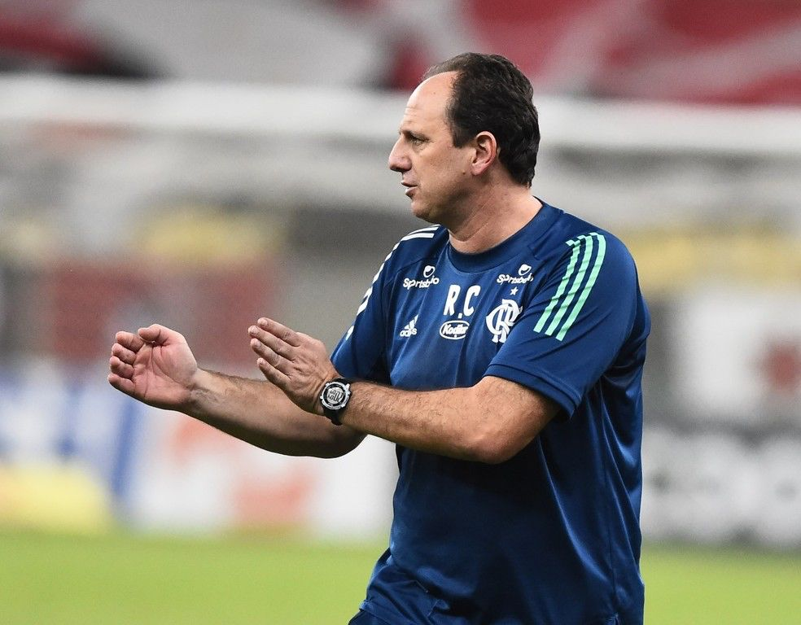
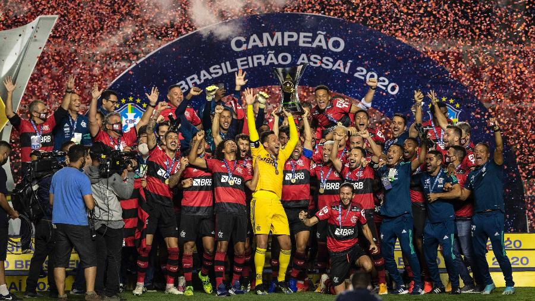

Flamengo Octa Campeão Brasileiro!
A Oitava conquista Rubro-Negra!
Início da Campanha:

Com a saída do treinador Jorge Jesus após a conquista do Campeonato Carioca, o Flamengo demorou para engrenar no Brasileirão com seu novo comandante, Dome, logo na estreia perdeu em casa para o Atlético-Mg, e emendou alguns empates seguidos, chegando até ficar na zona de rebaixamento por algumas rodadas!
A troca de técnico:
Com duas goleadas sofridas em sequência para o São Paulo e Galo respectivamente, a diretoria Rubro-Negra optou por demitir o então técnico Domenec.
Após belo trabalho no Fortaleza, Ceni chegou ao Flamengo com status de grande treinador. O início do "M1to" no clube carioca não foi dos melhores, com eliminações precoces na Libertadores e Copa do Brasil, demorando um pouco para engrenar. Contudo, após algumas rodadas, o time entendeu a filosofia do professor e conseguiu bons resultados, entrando de vez na briga pelo título.
Fla x Inter- A grande decisão!

A primeira "final" dos pontos corridos da história, assim pode se titular esse grande jogo da rodada 37. O Colorado chegava embalado e só precisava de uma vitória simples para ser Campeão Brasileiro após 41 anos. O time do Sul abriu o placar, mas com Arrascaeta e Gabigol inspirados, o Fla virou o jogo e assumiu a liderança pela primeira vez nesse campeonato, com 2 pontos de vantagem para o Segundo colocado, Internacional. Com isso, o Rubro-Negro precisava de uma vitória simples contra o São Paulo no Morumbi, ou torcer para um tropeço do Inter contra o Corinthians.
O quarteto fantástico!
O quarteto Bruno Henrique, Gabigol, Arrascaeta e Everton Ribeiro, em seu segundo ano atuando juntos, ajudaram o Flamengo a levantar a taça, com grandes atuações e decidindo jogos difíceis
Derrota com "cheirinho" de Título!
Mesmo com a derrota para o São Paulo por 2-1, o Fla conquistou a taça, já que o Inter não conseguiu sair do 0-0 contra o Timão.
Curiosidade: Além de 2020, o Internacional foi vice para o Flamengo no Brasileirão em duas oportunidades anteriores, no ano de 1987 e 2009.
Visite o nosso site: FlaOcta2020